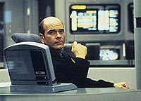
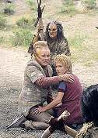
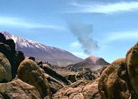
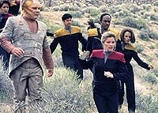
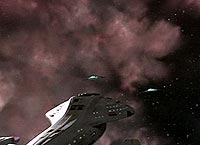
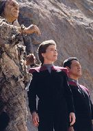
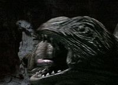
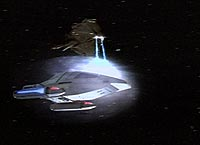

|
MANCHETE
DO EPISDIO
Tripulante condenado salva o dia, em
episdio que muda os rumos da srie
Episdio
anterior | Prximo
episdio
Sinopse:
Data Estelar: 50023.4
Abandonada pelos Kazons em um planeta dominado por terremotos e
criaturas ferozes, a tripulao procura por comida e abrigo. Ao
mesmo tempo, Paris, que conseguiu deixar a Voyager em uma nave
auxiliar, solicita a ajuda dos Talaxianos.
 Na
Voyager, o Doutor surpreende Seska ao lhe revelar que seu beb no
filho de Chakotay, mas de Culluh. Depois que ela deixa a
Enfermaria, o mdico descobre que no o nico membro da
tripulao na nave; o alferes Suder, violento sociopata que Tuvok
vinha tentando reabilitar, ainda est a bordo. Eles unem foras
contra os Kazons, mas ao traarem uma estratgia de ao, Suder
expressa descontentamento quando pensa que possivelmente ter de
matar inimigos para recuperar o controle da Voyager.
 No
planeta, Kes e Neelix so levados como refns por uma cultura
humanide primitiva. Chakotay e uma equipe de resgate os libertam,
mas durante o escape so obrigados a se esconder em uma das
perigosas cavernas. Eles conseguem se esquivar da enorme criatura
que habita o local e selam a abertura ao sarem.
medida que Paris traa curso de
volta Voyager com reforos, ele manda uma mensagem para o
Doutor, pedindo-lhe que desative as junes secundrias dos
phasers. Suder sabota uma srie de sistemas usando velhos truques
Maquis para evitar ser detectado. Mas Seska, outrora membro dos
Maquis, percebe que h um sabotador a bordo e confronta o Doutor.
Ele diz que o nico responsvel e Seska desativa seu programa
antes que ele possa cuidas das junes secundrias. Cabe a Suder
a tarefa de salvar nave e tripulao, e ele eroicamente desliga os
phasers pouco antes de ser morto pelos Kazons.
 Paris
dispara contra os feisers principais da Voyager, e quando Culluh
tenta compensar com os sistemas de back-up, Seska e muitos outros na
ponte so mortalmente feridos. Ela morre enquanto Paris os
Talaxianos se transportam para a nave, e Culluh leva a criana
consigo ao evacuar suas tropas. Paris ento toma o controle e volta
para resgatar seus colegas. Mais tarde, Tuvok oferece uma prece
Vulcana de paz a Suder, enquanto Janeway traa um curso para casa.
Comentrios:
O terceiro ano de Voyager comeou com tudo. Houve
muita coisa boa em "Basics, Part II",
principalmente no que se refere a um desenvolvimento significativo
de personagens --algo raro na srie. Merecem destaque o Doutor,
Chakotay e Suder.
 Tambm
Janeway, mas com menos destaque, principalmente por seu esprito de
liderana e por seu exemplo em situaes limite. Basta relembrar
a cena em que ela ordena que a tripulao coma as minhocas das
pedras e a seqncia em que corta os longos cabelos para fazer o
fogo --foram especiais. O que uma mulher determinada no comando no
faz pela sobrevivncia de seus subordinados?
Mais do que qualquer outra coisa, "Basics" d um
toque mais humano a Voyager. Incrivelmente foram necessrios
dois anos para os telespectadores assistirem srie e terem a noo:
"Nossa, eles esto desamparados e tm que fazer sacrifcios
para continuar vivos!". At ento, o que vamos eram
oficiais muito bonitos e bem vestidos, com botas polidas e estmagos
cheios, viajando em uma nave luxuosa e com recursos ilimitados
--isso sem falar na misteriosa regenerao dos sistemas bioneurais,
na limpeza do casco externo e nas eternas reservas de diltio que
alimentam o reator de dobra.
 Aqui,
vemos Frota e Maquis atirando pedras em neandertais aliengenas e a
batalha contra os fenmenos naturais e contra animais selvagens.
um verdadeiro retorno s razes humanas.
Os sentimentos e as emoes tambm afloram no episdio. O
Doutor, como sempre, foi magnfico. Alm do humor de costume,
ajudou Suder a superar o impacto psicolgico que a luta contra os
Kazons estava tendo sobre ele. Sobre Suder, tem-se a total regenerao
e redeno. Ele est genuinamente arrependido do que fez no
passado e percebe-se que tem levado a srio as tcnicas de meditao
que Tuvok vinha lhe ensinando. At Tuvok passa  momentos
de emoo, ao oferecer uma prece Vulcana alma de Suder. No se
pode esquecer tambm momentos dramticos como a morte de Hogan, o
cansao da alferes Wildman e o sofrimento do beb. No sempre
que se v cenas como a de Chakotay se oferecendo para carregar a
criana ou da capit dando ateno especial a um oficial menos
graduado.
Sobre Suder e Hogan, uma pena que os personagens tenham sido
descartados. Suder, porque tinha toda uma nova existncia
frente. A repercusso do que fez para salvar a nave poderia render
bons roteiros futuros para a srie. Quanto a Hogan, talvez seja o
personagens secundrio de maior destaque e empatia com o pblico
durante a segunda temporada. Em "Alliances",
ele parece ser mais um Maquis frustrado por estar sob o comando de
uma capit da Frota. Mas, com o decorrer do tempo, d para notar
que um bom homem, e um bom oficial. realmente uma pena que
tenha morrido.
 Outro
ponto negativo no episdio, alis, como acontece em todo episdio
envolvendo os Kazons, so os prprios Kazons. No d para
entender o que os produtores e roteiristas querem da raa. H
inconsistncias por toda parte. Talvez seja por esse motivo que
decidiram seguir em frente e os deixar para trs. Onde esto as
outras faces e por que no lutam para tomar a Voyager de Culluh?
Como os Nistrim conseguem operar a nave mais avanada da Frota, e
com 87 tripulantes a bordo? Algum se lembra que Chakotay comentou
com Janeway que seriam necessrias no mnimo 100 pessoas para
manter os sistemas ("The 37's")?
Como aquele Kazon conseguiu pousar a nave se, meses antes, nem Tom
Paris sabia como faz-lo? E como a meticulosa e experiente Seska no
fez uma varredura interna da Voyager para detectar os sinais de vida
de Suder?
Mas o que prevalece uma boa hora de ao, aventura e emoes.
uma histria pouco convencional para Voyager.
 E
os principais fatos desse episdio (as mortes dos recorrentes e a
ltima aventura com os Kazons) de ceta forma representam o fim de
um compromisso em Voyager --o da continuidade. Mata-se os
personagens recorrentes mais marcantes, elimina-se o inimigo
recorrente da srie (essa a ltima apario dos Kazons por um
longo, longo tempo) e tudo volta estaca zero. Claramente h uma
ruptura e uma mudana de filosofia com relao temporada
anterior. Nesse sentido, o episdio um marco.
"Basics, Part II" d incio a uma bateria de
mudanas na srie, mudanas essas que sero sentidas logo pelo pblico.
Daqui pra frente, vale a pena prestar ateno nos efeitos visuais,
no relacionamento Janeway/Chakotay, em Tom e B'Elanna, no Doutor e,
sobretudo, em Kes.
Citaes:
Chakotay - "Trapped on a
barren planet, and you're stuck with the only Indian in the Universe
who can't start a fire by rubbing two sticks together!"
("Aprisionados em um planeta desolado, e voc est presa com
o nico ndio no Universo que no consegue fazer fogo raspando
uma pedra na outra!")
Seska - "You're more talented in the art of deception than
you led me to believe."
("Voc tem mais talento na arte de mentir do que me fez
acreditar.")
Doutor - "I was inspired by the presence of a master."
("Eu me inspirei na presena de uma mestre.")
Doutor - "What am I supposed to do? Lead a revolt with the
gang from Sandrine's? Conjure up holograms of Nathan Hale and Che
Guevara? I'm a doctor, not a counter-insurgent... Get a hold of
yourself. You're not just a hologram, you're a Starfleet hologram."
("O que devo fazer? Liderar uma revolta com a gang do Sandrine?
Criar hologramas de Nathan Hale e Che Guevara? Eu sou um mdico, no
um revolucionrio... Controle-se. Voc no s um holograma,
voc um holograma da Frota Estelar.")
Trivia:
 A atriz Martha Hackett, que interpreta a espi Seska, disse que
ficou desapontada com o final que escreveram para seu personagem.
"Achei que se Janeway ou Chakotay tivessem que mat-la em
auto-defesa, a histria teria mais impacto. Ali estava uma vil
capaz de tomar o controle da nave e ela morre em um acidente. Parece
que eles desmontaram o que haviam construdo para mim".
A atriz Martha Hackett, que interpreta a espi Seska, disse que
ficou desapontada com o final que escreveram para seu personagem.
"Achei que se Janeway ou Chakotay tivessem que mat-la em
auto-defesa, a histria teria mais impacto. Ali estava uma vil
capaz de tomar o controle da nave e ela morre em um acidente. Parece
que eles desmontaram o que haviam construdo para mim".
"Eu particularmente estava cansada dos Kazons h muito tempo,
antes mesmo daquele episdio [Basics] ser produzido ou
idealizado", disse Jeri Taylor, que assumiu o controle da srie
na passagem para o terceiro ano. "Estou feliz em poder dizer
que a ltima vez que os veremos".
Em "Basics, Part II", o alferes Lon Suder (Brad
Dourif) aparece pela ltima vez em Voyager. O personagem s
citado novamente no episdio "Counterpoint", do
quinto ano.
Ficha
tcnica:
Escrito por Michael Piller
Direo de Winrich Kolbe
Exibido em 04/09/1996
Produo: 043
Elenco:
Kate Mulgrew como
Kathryn Janeway
Robert Beltran como Chakotay
Roxann Biggs-Dawson como B'Elanna Torres
Robert Duncan McNeill como Tom Paris
Jennifer Lien como Kes
Ethan Phillips como Neelix
Robert Picardo como Doutor
Tim Russ como Tuvok
Garrett Wang como Harry Kim
Elenco convidado:
Martha Hackett como Seska
Anthony De Longis como Culluh
Nancy Hower como alferes Wildman
Brad Dourif como alferes Suder
Simon Billig como alferes Hogan
Scott Haven como engenheiro Kazon
David Cowgill como aliengena 2
Michael Bailey Smith como aliengena 1
Episdio
anterior | Prximo
episdio
|